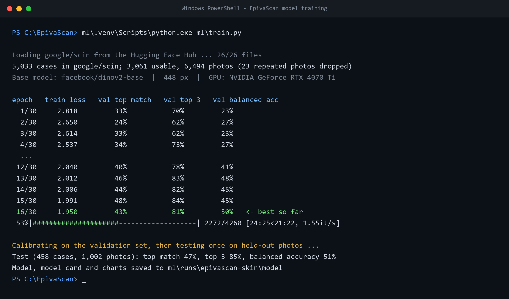

From a photo to a next step.
Built to be used without training. Four moves take you from opening the app to knowing what to do next.
- Capture the area
Photograph the patch of skin, or upload a picture you already have. A sharp, well-lit photo matters most.
- The model takes a look
It compares the photo with the skin conditions it has been trained to recognise. About the model
- Read the matches
A ranked list of conditions, closest first, each with a percentage for how strongly the photo matches.
- Take it to a clinician
Show the result to a health worker or doctor, who can examine the skin and confirm what is going on.


The model.
An image model trained on SCIN, a public collection of skin photos labelled by dermatologists. It runs the web demo, and its weights and model card are public on Hugging Face.
On photos it never saw in training, its closest match agrees with the dermatologists 47% of the time, and their answer is in its top three 85% of the time. The model card breaks this down by condition and skin tone.
